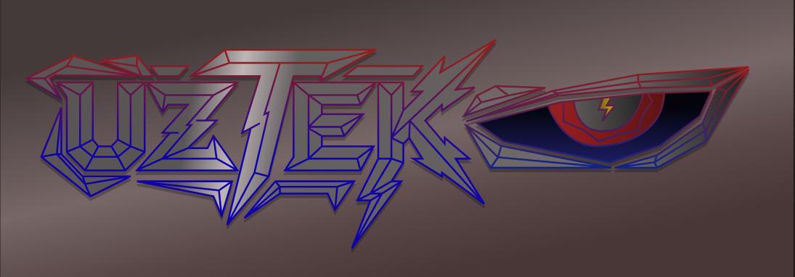
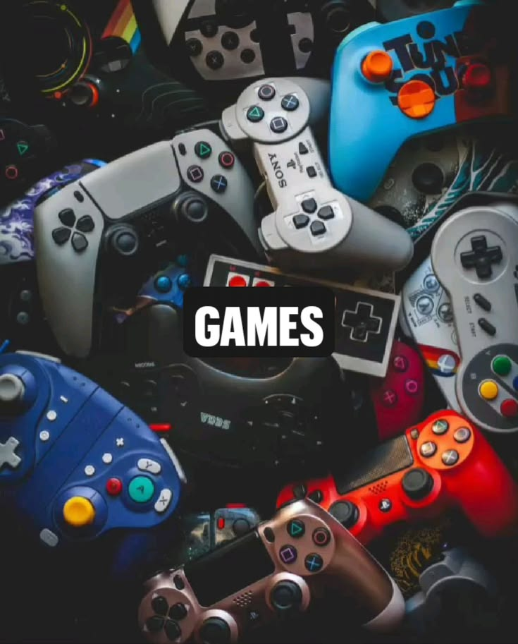
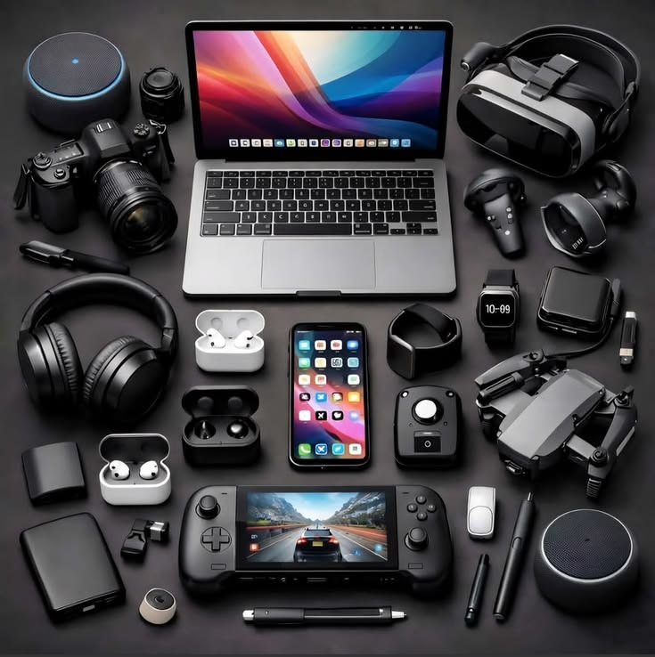
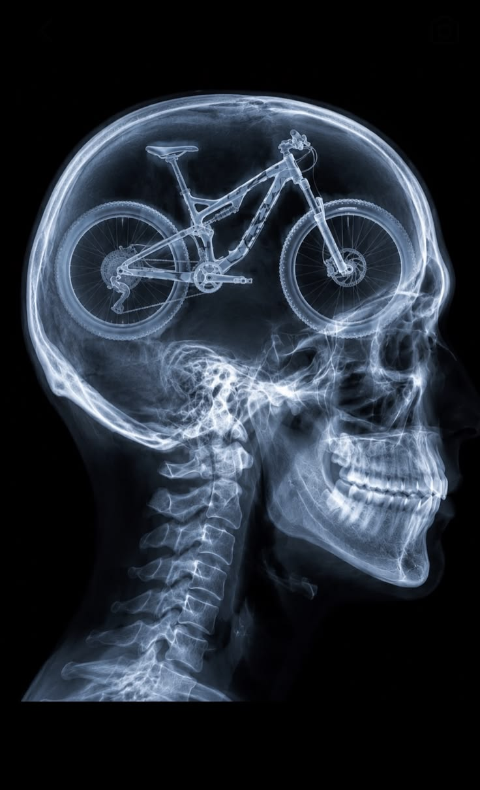

Bienvenid@ a mi sitio personal
Hola, mi nombre es Kevin Uziel Rodríguez Hernández y en este sitio quiero compartir un poco sobre mi y mis gustos, pasatiempos e intereses principales.
Para empezar, me gusta mucho la tecnología, especialmente todo lo relacionado con computadoras, celulares y las nuevas tecnologías que salen.
Uno de mis hobbies favoritos es el ciclismo y la parte tecnica. Me gusta salir a rodar, conocer nuevos lugares y disfrutar del camino, tambien disfruto mucho aprender sobre sus componentes y como arreglarlos.
También disfruto aprender cosas nuevas y conocer las novedades tecnologicas que aparecen dia con dia y aprender todo de ello, de hecho actualmente estoy pensando en comprar una moto y aprender sobre ese mundo del motociclismo.
Tambien uno de mis pasatiempos es jugar videojuegos ya sea competitivos o de historia, me gusta mucho jugar con mis amigos y pasar un buen rato, tambien llegar a tener una empresa de videojuegos y accesorios para gamers llamada "UZTEK" esto ya que fue uno de mis sueños desde pequeño y me gustaria poder cumplirlo.

Cosas que me gustan



Datos del desarrollador
| Nombre | Kevin Uziel Rodriguez Hernandez |
|---|---|
| Intereses | Tecnología, programación y ciclismo |
| Pasatiempos | Salir en bicicleta, aprender sobre tecnología y jugar videojuegos |
| Área de estudio | Desarrollo de software |